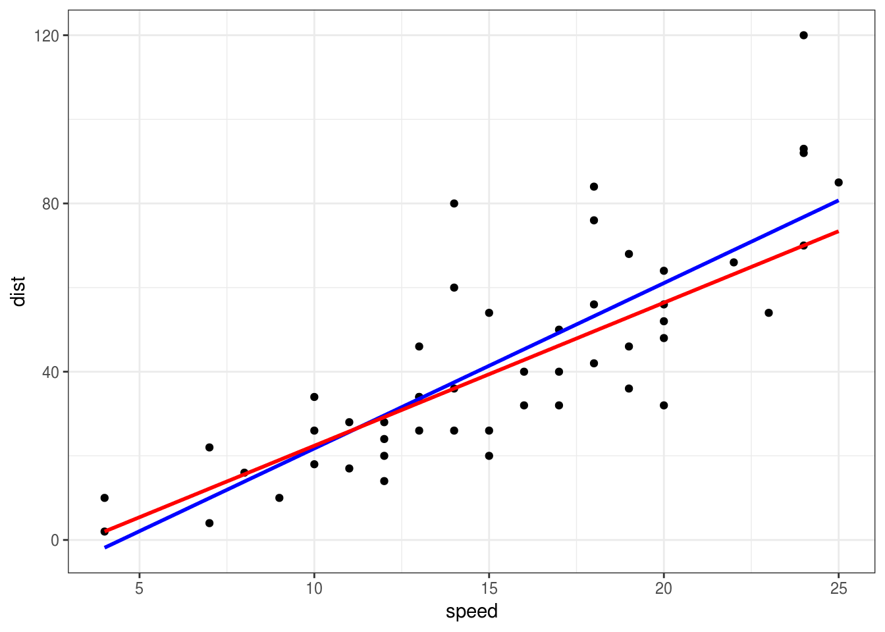
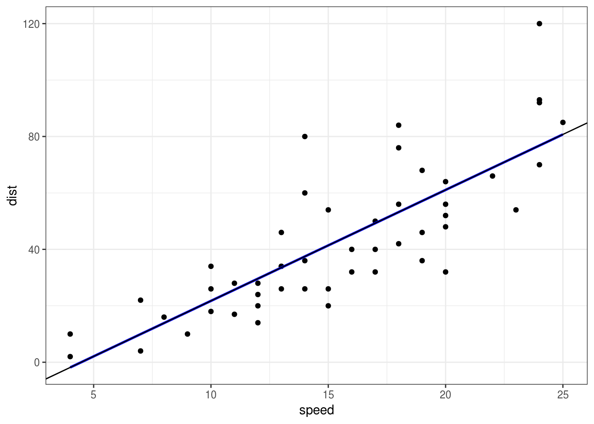

5 Osnove linearnih modela
5.1 Regresija
Cilj regresije je da nadje funkcionalnu vezu izmedju obeležja \(Y\), koje nazivamo zavisnom promenljivom i obeležja \(X\), koje nazivamo nezavisnom promenljivom ili prediktorom.
Ova veza je oblika \[Y = f(X) + \varepsilon,\] gde je \(\varepsilon\) slučajna greška modela, koja je nezavisna od \(X\).
Prava funkcija \(f(x)\) je nepoznata, pa je treba oceniti na osnovu uzorka \((x_i, y_i),\ i=1,\dots,n\). Za uzorak pretpostavljamo da važi \[y_i = f(x_i) + \varepsilon_i\] i potrebna nam je ocena \(\hat{f}(x)\).
Prostor svih mogućih funkcija \(f(x)\) je prevelik i nije ga moguće istražiti u potpunosti, pa stoga uvek pretpostavljamo odredjen (obično parametarski) oblik funkcije \(f(x)\), čime smanjujemo prostor funkcija nad kojim tražimo \(f(x)\).
5.2 Linearna regresija
U linearnoj regresiji, pretpostavljamo da je funkcija koju tražimo oblika \(f(x)=\beta_0+\beta_1x,\) odnosno imamo model \[y_i=\beta_0+\beta_1x_i+\varepsilon_i.\] Sada nam se zadatak nalaženja funkcije \(f(x)\) sveo na odredjivanje parametara \(\beta_0\) i \(beta_1\) koji najbolje opisuju podatke.
To se može raditi na mnogo načina, što pokazuje sledeći primer, koji koristi različite metode za ocenu.
5.2.1 Šta znači najbolje?
Koristićemo podatke cars (ugradjene u R) koji prikazuju brzinu vozila i dužina puta potrebnog da se zaustavi. Podaci su za automobile iz 20-ih godina 20. veka. Za ocenu najbolje prave, koristićemo funkcije lm (ugradjena u R) i funkciju rq iz paketa quantreg.
# install.packages("quantreg")
library(ggplot2)
library(quantreg)## Loading required package: SparseM##
## Attaching package: 'SparseM'## The following object is masked from 'package:base':
##
## backsolveggplot(cars, aes(x=speed, y=dist)) +
geom_point() +
geom_smooth(method="lm", se = FALSE, color="blue") +
geom_smooth(method="rq", se = FALSE, color="red")
Koja od ove dve prave bolje modeluje podatke?
Ovo pitanje je pogrešno. Treba definisati koji je kriterijum da je nešto bolje od nečeg drugog.
Obe ove prave su dobijene tako da budu optimalne u nekom smislu. Plava je dobijena da bude optimalna u srednjekvadratnom smislu, dok je crvena dobijena kao optimalna u srednjeapsolutnom smislu. Oba metoda su dobra, koji ćemo da koristimo zavisi od prirode podataka koje imamo i cilja istraživanja.
U nastavku ćemo rekreirati ove prave samostalno.
5.2.2 Nalaženje optimalne prave
Najčešći pristup traženju optimalnih vrednosti parametara \(\beta_0\) i \(\beta_1\) je metod najmanjih kvadrata, čiji je cilj minimizovanje srednjekvadratne greške \[\frac1n \sum_{i=1}^n(y_i-\beta_0-\beta_1x_i)^2,\] tj. minimizujemo srednjekvadratno odstupanje stvarnih vrednosti \(y_i\) i ocenjenih vrednosti \(\hat{y}_i=\hat{\beta}_0+\hat\beta_1x_i\).
Dakle, ocenjeni parametri su \[(\hat{\beta}_0,\hat\beta_1) = \underset{\beta_0,\beta_1}{\mathrm{argmin}}\frac1n \sum_{i=1}^n(y_i-\beta_0-\beta_1x_i)^2.\]
Ove parametre nalazi funkcija lm.
U slučaju funkcije rq, parametri su \((\hat{\beta}_0,\hat\beta_1) = \underset{\beta_0,\beta_1}{\mathrm{argmin}}\frac1n \sum_{i=1}^n|y_i-\beta_0-\beta_1x_i|.\)
Primenimo sada stečeno znanje optimizacije da nadjemo tražene ocene
mse <- function(beta) {
with(cars, {
mean((dist - beta[1] - beta[2]*speed)^2)
})
}
beta_hat <- nlm(mse, c(0,0))$estimate
ggplot(cars, aes(x=speed, y=dist)) +
geom_point() +
geom_smooth(method="lm", se = FALSE, color="blue") +
geom_abline(intercept = beta_hat[1], slope = beta_hat[2])
Vidimo da smo pogodili pravu. Uradite isto i za apsolutnu grešku i funkciju rq.
to be continued…